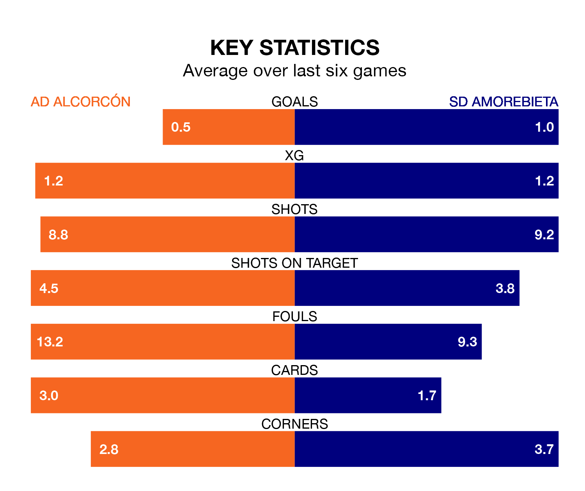

Struggling SD Amorebieta face AD Alcorcón away at the Estadio Santo Domingo on Sunday looking to build on a win in their last league outing.
After securing all three points with a 3-1 victory over Sporting Gijón on March 24, Amorebieta sit 20th in the Segunda División.
They travel to play an Alcorcón side 18th in the standings, who also won their last match, 1-0 against Real Oviedo, on March 23.
Alcorcón are in disappointing form in the Segunda División, with one win and two draws from their last six games.
With three wins and two draws over that period, Amorebieta's form is much better – they have taken 11 points from 18, compared to the home team's five.
In the last three years, Alcorcón and Amorebieta have played each other on three occasions. Alcorcón won one of them and they drew the other.
Their last meeting was on December 21, when Alcorcón won 2-1 away.
With 24 goals in 32 games so far this season, Alcorcón are the league's joint-second-lowest scorers with 0.8 goals per game. And they are conceding more than average, letting in 43 goals at a rate of 1.3 per game.
The visitors are also below average scorers, with 0.8 goals per game, compared to a league average of 1.1. They have conceded 1.2 goals per game.
Updated: 12:16 (UTC), 25/03/24